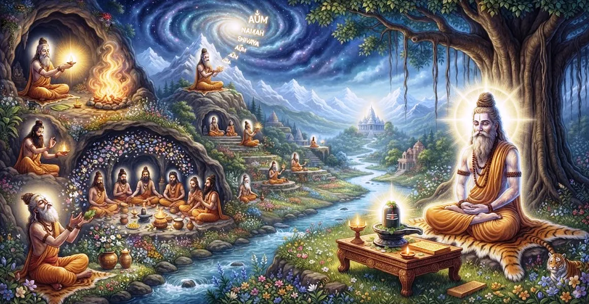

The Procedure of Initiating a Disciple
The eighteenth chapter of the Kailasa Samhita outlines the sacred procedure of initiating a disciple (Diksa), detailing the rituals, purifications, and guru-disciple protocols.
Sage Suta explains how a qualified guru transmits spiritual wisdom, purifies the student's mind, and confers the holy mantras of Lord Shiva.
This chapter provides the essential guidelines for entering the sacred path of esoteric transformation.
Chapter 18 Highlights
Sacred Diksa
Details the traditional rites and purification steps for spiritual initiation.
Guru Qualities
Outlines the spiritual stature and purity required of an initiating master.
Disciple Eligibility
Defines the devotion, surrender, and discipline expected of the seeker.
Ritual Offerings
Explores the fire ceremonies and sacramental rites accompanying initiation.
Mantra Transmission
Explains the sacred passing of divine syllables from master to heart.
Path to Yogapatta
Prepares the initiated seeker for advanced ascetic life and the rules of Yogapatta in Chapter 19.
Core Topics in This Chapter
The Supreme Importance of Diksa
Sage Suta emphasizes that spiritual initiation (Diksa) is the gateway to liberation, severing karmic bonds and awakening dormant divine consciousness.
Without initiation, spiritual practices lack the vital current of lineage grace required to pierce the veils of illusion.
Qualifications of the Initiating Guru
A true guru must be firmly established in Shiva consciousness, compassionate, well-versed in sacred scriptures, and capable of leading the disciple across the ocean of samsara.
The guru serves as the physical embodiment of Lord Shiva's grace on Earth.
Eligibility and Vows of the Disciple
The disciple must approach the master with humility, unwavering faith, pure intent, and a sincere dedication to spiritual truth.
Vows of ethical conduct, truthfulness, and devotion to Lord Shiva are undertaken prior to receiving the sacred formula.
Ritual Purification and Worship
Initiation involves sacred baths, ceremonial worship of Lord Shiva, fire oblations (Homa), and purification of the five elements within the subtle body.
These rites cleanse accumulated mental impurities and prepare the vessel for divine transmission.
The Conferral of Sacred Mantras
The pinnacle of the ceremony is the whispering of the sacred Shiva mantra into the disciple's right ear by the guru.
This mantra acts as a seed of supreme awakening, to be chanted with deep absorption and reverence.
Duties and Conduct After Initiation
Following initiation, the disciple must maintain regular meditation, uphold moral discipline, and serve the guru and community with selflessness.
This lifestyle preserves the potency of Diksa and accelerates spiritual evolution.
Transition to Chapter 19
Having established the procedure of initiation in Chapter 18, Sage Suta introduces Chapter 19, 'The Rules of Yogapatta'.
Chapter 19 details the regulations and symbolic significance of the ascetic band worn by advanced practitioners of yoga and renunciation.
Key Teachings of Chapter 18
Grace of Lineage
Diksa bridges individual effort with the infinite grace of the divine lineage.
Guru's Role
The master is the catalyst who awakens the inner light of consciousness.
Purified Vessel
Ritual cleansing prepares the mind to receive higher spiritual truths.
Sacred Seed
The whispered mantra plants the seed of ultimate liberation in the heart.
Steadfast Devotion
A true disciple maintains lifelong reverence for the guru and teachings.
Ascetic Progress
Initiation opens the door to advanced yogic discipline and renunciation.
Spiritual Reflection
Initiation is not merely an external ceremony; it is a profound inner awakening where the guru kindles the flame of divine remembrance in the disciple's soul, transforming ordinary striving into a sacred pilgrimage toward Shiva.
Living the Message of Chapter 18
Cherish the sacred connection with your spiritual guide and honor the mantras entrusted to your heart.
Approach your daily spiritual practice with the humility, reverence, and dedication of a true initiate.
Let the purity of your conduct reflect the transformative grace of Lord Shiva.
Key Spiritual Concepts
The sacred initiation ritual into the worship and realization of Lord Shiva.
The defining spiritual characteristics and purity of a qualified guru.
The humility, discipline, and devotion required of a sincere disciple.
The sacred transmission of the divine mantra from master to disciple.
The sacrificial fire ritual performed during the purification of initiation.
The subsequent progression toward advanced ascetic life explored in Chapter 19.
Chapter Summary
Kailasa Samhita Chapter 18 presents The Procedure of Initiating a Disciple. Detailing the supreme importance of Diksa, the qualifications of guru and disciple, ritual purifications, mantra transmission, and post-initiation duties, this chapter guides seekers into the formal fold of spiritual practice. It sets the stage for Chapter 19, 'The Rules of Yogapatta', exploring advanced ascetic discipline.
Frequently Asked Questions
1. What is the primary subject of Kailasa Samhita Chapter 18?
Chapter 18 details the procedure of initiating a disciple (Diksa), outlining the sacred rituals, purifications, and guru-disciple protocols in Shiva worship.
2. Why is Diksa or spiritual initiation important?
Diksa removes past karmic impurities, connects the disciple's soul to the lineage of grace, and empowers mantra practice for liberation.
3. What qualities are required in a qualified disciple?
Sincerity, devotion to Lord Shiva, respect for the guru, purity of mind, and a strong yearning for spiritual truth.
4. How does Chapter 18 connect with the preceding chapter?
While Chapter 17 establishes the non-dualistic realization of Shiva, Chapter 18 provides the practical ritual framework through which that wisdom is transmitted to a student.
5. What role does the guru play during initiation?
The guru acts as the living conduit of divine grace, awakening the disciple's inner spiritual vision and conferring sacred mantras.
6. What is the next chapter for navigation after Chapter 18?
The next chapter for navigation is Chapter 19, titled 'The Rules of Yogapatta'.
“Through the grace of the master and the sacred ritual of Diksa, the disciple crosses the ocean of darkness into the eternal light of Shiva.”
Continue Through Kailasa Samhita
Chapter 18 details The Procedure of Initiating a Disciple. Continue to Chapter 19, The Rules of Yogapatta.